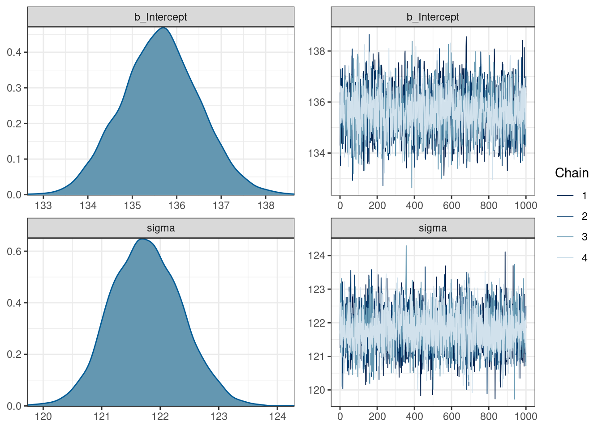
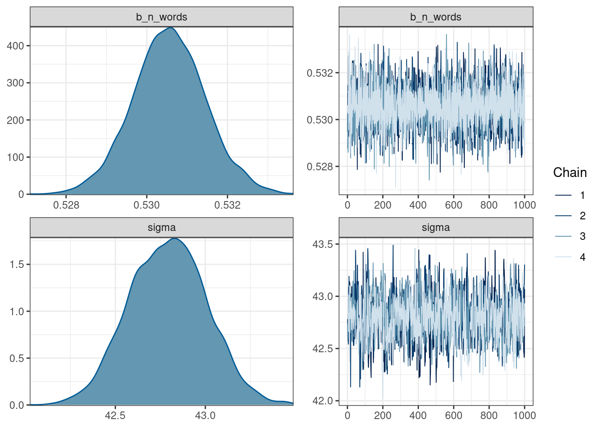

9 Введение в Марковская цепь Монте-Карло
library(tidyverse)Марковская цепь Монте-Карло (Markov chain Monte Carlo, MCMC) — это класс алгоритмов для семплирования, которые позволяют моделировать некоторое распределение вероятностей. При моделировании используют разные алгоритмы, мы будем смотреть на примере алгоритма Метрополиса-Гастингса (Metropolis-Hastings).
Для того, чтобы в этом разобраться нам потребуется обсудить:
- метод Монте-Карло;
- марковские цепи;
- алгоритма Метрополиса-Гастингса.
9.1 Метод Монте-Карло
9.2 Марковские цепи
Марковский процесс
- конечное количество состояний
- вероятность переходов из одного состояния в другое
Славная визуализация (спасибо за ссылку Марине Дубовой)
Возьмем наш датасет с погодой и отфильтруем только Сан Диего:
read_csv("https://raw.githubusercontent.com/agricolamz/2019_BayesDan_winter/master/datasets/weather.csv") %>%
select(city, date, events) %>%
filter(city == "San Diego") ->
weather## Rows: 155 Columns: 25## ── Column specification ────────────────────────────────────────────────────────
## Delimiter: ","
## chr (2): city, events
## dbl (22): year, month, day, high_temp, avg_temp, low_temp, high_dewpt, avg_...
## date (1): date##
## ℹ Use `spec()` to retrieve the full column specification for this data.
## ℹ Specify the column types or set `show_col_types = FALSE` to quiet this message.weather %>%
ggplot(aes(date, events))+
geom_point()Давайте считать, что NA — это солнце.
weather %>%
mutate(events = ifelse(is.na(events), "Sun", events)) ->
weather
weather%>%
ggplot(aes(date, events))+
geom_point()
Визуализируем частоты разных погодных событий в Сан Диего:
weather %>%
count(events) %>%
mutate(events = reorder(factor(events), n)) %>%
ggplot(aes(events, n))+
geom_col(fill = "lightblue")+
coord_flip()
Визуализируем матрицу последовательных переходов разных погодных событий:
tibble(stage = weather$events,
lead_stage = lead(weather$events, 1)) %>%
table() %>%
prop.table() %>%
as.data.frame() %>%
ggplot(aes(stage, lead_stage, size = Freq, fill = Freq))+
geom_raster()+
geom_point()+
scale_fill_gradient(low="grey95", high="red")+
labs(title = 'Матрица переходов погодных событий в Сан Диего в январе')Сделаем марковскую цепь и визуализируем ее граф:
library(markovchain)## Package: markovchain
## Version: 0.8.6
## Date: 2021-05-17
## BugReport: https://github.com/spedygiorgio/markovchain/issuesour_mc <- markovchainFit(weather$events)
our_mc$estimate## MLE Fit
## A 4 - dimensional discrete Markov Chain defined by the following states:
## Fog, Rain, Rain , Thunderstorm, Sun
## The transition matrix (by rows) is defined as follows:
## Fog Rain Rain , Thunderstorm Sun
## Fog 0.00000000 1.0000000 0.0000000 0.0000000
## Rain 0.00000000 0.2222222 0.2222222 0.5555556
## Rain , Thunderstorm 0.00000000 1.0000000 0.0000000 0.0000000
## Sun 0.05263158 0.2631579 0.0000000 0.6842105plot(our_mc$estimate)
Теперь мы можем предсказать наше следующее состояние \(t_2\) перемножив матрицу начального состояния \(t_1\) (\(1 \times 4\)) на матрицу переходов (\(4 \times 4\)).
\[t_2 = t_1 \times \text{transitional matrix}\]
Предположим, что наше начальное состояние — это дождь Rain:
t_1 <- matrix(c(0, 1, 0, 0), nrow = 1)
t_1 * our_mc$estimate # это особая звездочка из пакета markovchain## Fog Rain Rain , Thunderstorm Sun
## [1,] 0 0.2222222 0.2222222 0.5555556Понятное дело состояние \(t_3\) это обычное произведение состояния \(t_2\) и матрицы переходов:
\[t_3 = t_2 \times \text{transitional matrix} = t_1 \times \text{transitional matrix} \times \text{transitional matrix} = t_1 \times \text{transitional matrix}^2\]
Используя полученную модель можно вычислите вероятность каждого из погодных событий на 7-ой день после дождя.
t_1 * our_mc$estimate ^ 7 # это особые звездочка и крышечка из пакета markovchain## Fog Rain Rain , Thunderstorm Sun
## [1,] 0.03005657 0.324639 0.07273401 0.5725704Вообще-то, часто так бывает, что цепь сходиться на каком-то состоянии (состояние эквилибриум из домашнего задания) и дальше не изменяется. Давайте Визуализируем 40 состояний цепи, если начальное состояние — дождь.
df <- as.data.frame(t_1)
colnames(df) <- sort(unique(weather$events))
sapply(2:40, function(x){
df[x,] <<- as.data.frame(as.matrix(df[1,]) * (our_mc$estimate^(x-1)))
})## [,1] [,2] [,3] [,4] [,5]
## Fog 0 0.02923977 0.02650388 0.03035072 0.0296548
## Rain 0.2222222 0.4178038 0.3039872 0.3386555 0.3214342
## Rain , Thunderstorm 0.2222222 0.04938272 0.09284528 0.0675527 0.07525677
## Sun 0.5555556 0.5035737 0.5766637 0.5634411 0.5736543
## [,6] [,7] [,8] [,9] [,10]
## Fog 0.03019233 0.03005657 0.03013529 0.03011125 0.03012316
## Rain 0.327303 0.324639 0.325609 0.3251911 0.3253493
## Rain , Thunderstorm 0.07142982 0.07273401 0.072142 0.07235756 0.07226468
## Sun 0.5710748 0.5725704 0.5721137 0.5723401 0.5722628
## [,11] [,12] [,13] [,14] [,15]
## Fog 0.0301191 0.03012094 0.03012027 0.03012056 0.03012045
## Rain 0.3252832 0.3253088 0.3252983 0.3253024 0.3253007
## Rain , Thunderstorm 0.07229985 0.07228515 0.07229084 0.07228851 0.07228942
## Sun 0.5722979 0.5722851 0.5722906 0.5722885 0.5722894
## [,16] [,17] [,18] [,19] [,20]
## Fog 0.03012049 0.03012048 0.03012048 0.03012048 0.03012048
## Rain 0.3253014 0.3253011 0.3253012 0.3253012 0.3253012
## Rain , Thunderstorm 0.07228905 0.0722892 0.07228914 0.07228916 0.07228915
## Sun 0.5722891 0.5722892 0.5722891 0.5722892 0.5722892
## [,21] [,22] [,23] [,24] [,25]
## Fog 0.03012048 0.03012048 0.03012048 0.03012048 0.03012048
## Rain 0.3253012 0.3253012 0.3253012 0.3253012 0.3253012
## Rain , Thunderstorm 0.07228916 0.07228916 0.07228916 0.07228916 0.07228916
## Sun 0.5722892 0.5722892 0.5722892 0.5722892 0.5722892
## [,26] [,27] [,28] [,29] [,30]
## Fog 0.03012048 0.03012048 0.03012048 0.03012048 0.03012048
## Rain 0.3253012 0.3253012 0.3253012 0.3253012 0.3253012
## Rain , Thunderstorm 0.07228916 0.07228916 0.07228916 0.07228916 0.07228916
## Sun 0.5722892 0.5722892 0.5722892 0.5722892 0.5722892
## [,31] [,32] [,33] [,34] [,35]
## Fog 0.03012048 0.03012048 0.03012048 0.03012048 0.03012048
## Rain 0.3253012 0.3253012 0.3253012 0.3253012 0.3253012
## Rain , Thunderstorm 0.07228916 0.07228916 0.07228916 0.07228916 0.07228916
## Sun 0.5722892 0.5722892 0.5722892 0.5722892 0.5722892
## [,36] [,37] [,38] [,39]
## Fog 0.03012048 0.03012048 0.03012048 0.03012048
## Rain 0.3253012 0.3253012 0.3253012 0.3253012
## Rain , Thunderstorm 0.07228916 0.07228916 0.07228916 0.07228916
## Sun 0.5722892 0.5722892 0.5722892 0.5722892df %>%
mutate(stage = 1:40) %>%
gather(events, value, Fog:Sun) %>%
ggplot(aes(stage, value, color = events))+
geom_line(show.legend = FALSE)+
directlabels::geom_dl(aes(label = events), method = "last.qp")+
labs(title = 'Марковская цепь погодных событий в Сан Диего в январе',
caption = "начальное состояние --- дождь (Rain)")
И люди вообще-то научились вычислять такие вещи на основании цепи:
steadyStates(our_mc$estimate)## Fog Rain Rain , Thunderstorm Sun
## [1,] 0.03012048 0.3253012 0.07228916 0.57228929.3 Соединим идеи Марковских цепей и Монте-Карло
shiny::runGitHub("agricolamz/mcmc_shiny")